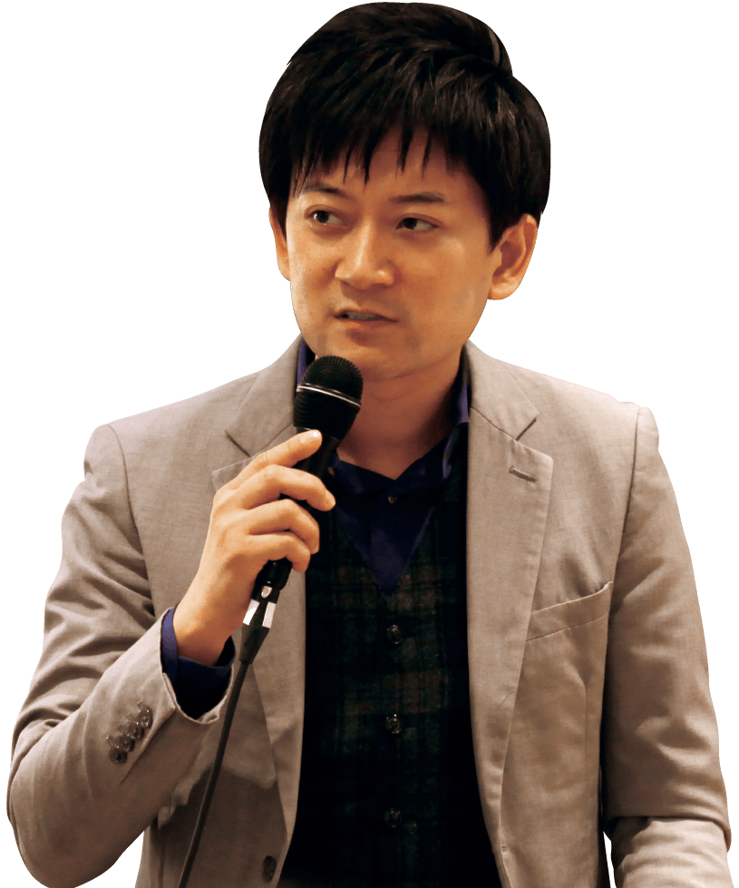

OIUとカゴメが
若者の野菜不足問題に挑戦
ベジキャンパス
学生たちが自分自身で立案し、実行する。
教科書のない授業、だから面白い。
OIUとカゴメの産学協働プロジェクトで、
若者の野菜不足をゼロにする！
〈ベジキャンパス〉は
ニッポンの若者の食生活改善を目指します！
大阪国際大学・大阪国際大学短期大学部では食品総合メーカーのカゴメ株式会社と協働で、「ベジキャンパス」に取り組んでいます。 近年、問題視されている若者の野菜不足の改善を目指すもので、学生ならではの発想力と行動力に、カゴメ株式会社が創業以来120年で培った「食と健康」のノウハウを融合して挑戦しています。 若者のアンバランスな食生活という身近な問題の解決に取り組みながら、試行錯誤を繰り返すことで、正課授業だけでは得がたい貴重な経験を身につけています。
マニュアルに頼らない
解決力が求められている。
ビジネスの現場では、つねに即戦力の人材が求められています。 本学では「ベジキャンパス」を通して、主体性、思考力、人間力という社会人としての基礎力の取得を目指しています。マニュアルに頼らず自分たちの力で問題解決できる若者の育成に大きな期待を寄せています。
「食と健康プロジェクト」のプロセス
参加学生はカゴメ株式会社社員による特別講義を受講。 内容は「食に関する知識」や「マーケティングの基本」「カゴメの事業紹介」などで、この講義に基づいて「若者の野菜不足を0にする」ことを目的とした本プロジェクトの社会背景や必要性などについて理解を深めます。
学生たちは5〜6名のチームに分かれてチームごとにターゲットを選定し、ターゲットが野菜を必要量摂取するようになるためにはどうすれば良いか、具体的な企画を立案します。 アイデアは自由ですが、あくまでも自分たちで実行可能なものでなければなりません。
各チームは、カゴメ社員と本学教職員に向けて立案した企画のプレゼンテーションを行います。 質疑応答ではカゴメ側からの指摘やアドバイスをいただき、その後のチームミーティングにカゴメ社員も加わって指導を受けながらそれぞれの企画案をブラッシュアップ。 カゴメ、本学双方が認めたもので企画決定とします。
決定した企画を学生たちが実際に実行します。 中間発表におけるカゴメからのアドバイスも受け、企画をブラッシュアップしています。なお、 最終発表は長野県にオープンした「カゴメ野菜生活ファーム富士見」で行われ、学生たちは発表後に工場や施設の見学、トマト温室見学、調理体験なども行いました。
食堂メニュー開発
学生が習慣的に野菜をとれるようになるために、野菜たっぷりメニューを開発し、学生食堂で販売しました。
【メニュー例】
夏野菜うどん・ 野菜モリモリ味噌ラーメン
野菜たっぷりキーマカレー・ 小松菜オムライス など
ミニトマト栽培
未来につながる野菜摂取に貢献を。
一人暮らしの学生や、併設こども園の園児に協力頂き、トマト栽培を実施。この活動を通じて、学内の野菜摂取率を上げること、また、SDGsの持続の考え方から、次の代へと畑を引き継ぎ、野菜摂取の意識の高い大学へと変えること、そして、カゴメプロジェクトの参加者を増やし、活動の幅を広げ、できるだけ多くの方が野菜に関心を持てるように貢献することを目標としました。
やさいカレー販売
守口市の高齢者に心も体も元気になってもらいたい！
そんな思いで野菜をたくさん摂取できるカレー作りに挑戦しました。試作を繰り返し、守口市民祭に出店。キッチンカーでの対面販売で157食を完売しました。
同時開催したベジチェック測定会では、今の自分がどれだけ野菜が摂れているのか興味をもって貰うことができ350ｇの野菜摂取量が必要だということを知ってもらえるきっかけを作ることができました。
スムージー販売
野菜を摂取してもらうきっかけになるよう、学内でスムージー販売を企画。価格と販売目標数、映えるデザインと宣伝POPなど様々なビジネスの要素も学びました。
また、自分の野菜摂取量がわかるようにキッチンカーの隣にべジチェックを用意しました。
やさいカラフルどんぶり
コンテスト
普段の食事で野菜を摂取するきっかけになるよう、野菜を使用した“どんぶり”を募集し、コンテストを行いました。
すべての企画終了後、最終発表を行い、各企画の評価が下されます。 これは検証結果と、事業として実現可能かどうかの評価になり、「若者の野菜不足を0にする」ために本当に効果的な良い結果となれば学会発表やカゴメによる事業化にもつながっていきます。
学生の皆さまがマーケッターです。
「ベジキャンパス」は、学生の皆様が自ら主体的に考え行動し、メンバーと協力しながら、リーダーシップやコミュニケーション力を身につけるプロジェクトです。 マーケティング基礎知識を学び、学生の皆様がマーケッターとなり、野菜不足を解消できる施策を立案・実行しPDCAを回す力を、楽しみながら身につけていきます。 社会人になる前に、経験をしておくことで、チームで仕事をする実践力も学びます。 そして、その先、このプロジェクトメンバーが先駆者となり、「野菜摂取向上学」のような新しい学びの領域を創造・発信していければ、日本の野菜不足が解消されるかもしれません。 夢・志は大きく持ちながら、一緒に進みましょう!
